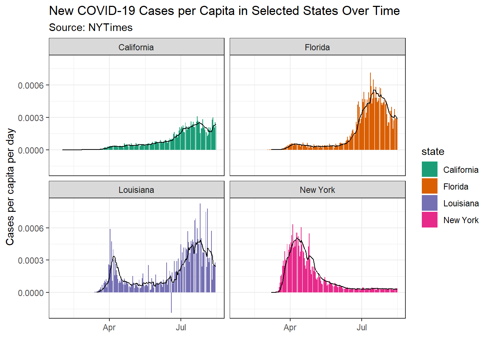
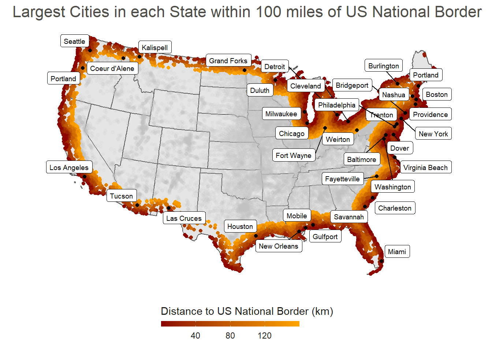
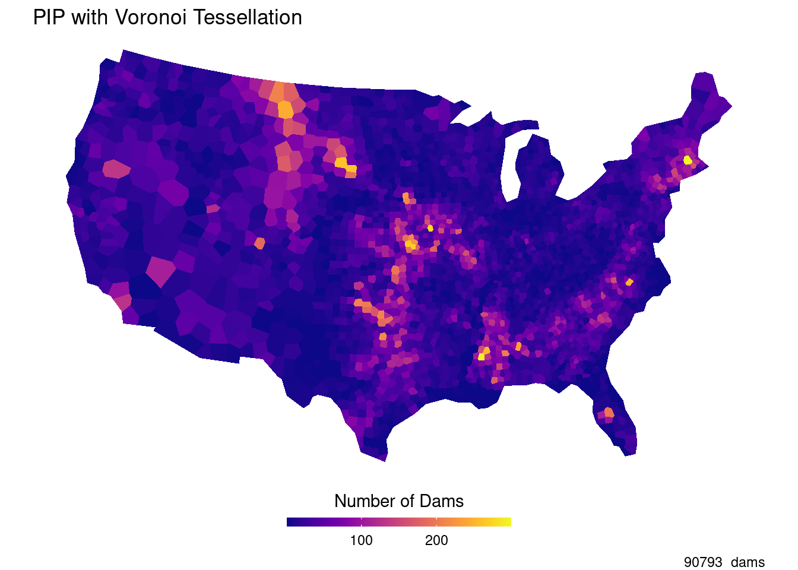
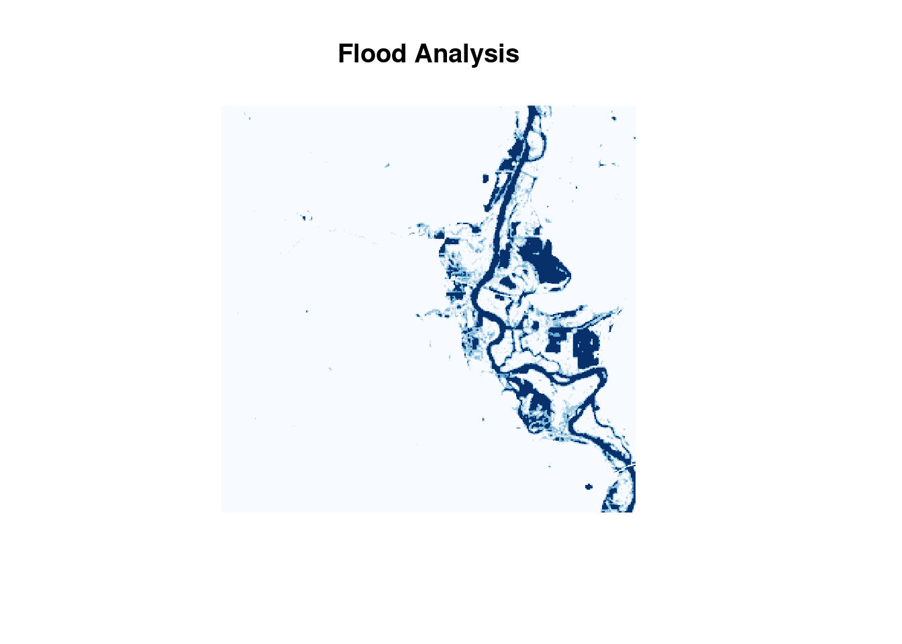
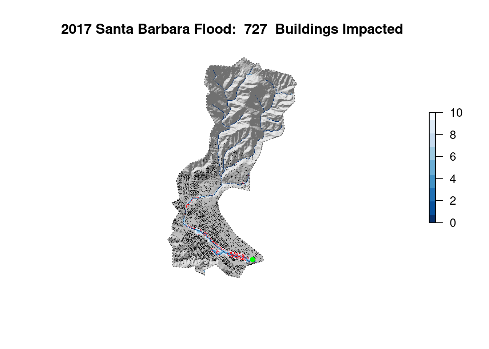

In the summer of 2020 I took a class GIS course based in R. I wrote some code, and did some cool data science. Here is a collection of links!
- For this assignment, we built a static website using Rmarkdown.
- Includes a project github repository for access, view it here or by clicking on the above header.
- Deployed project site as separate repo from main website repo using Netlify.
- Parsed real-world data using tidyverse functions and plotted using ggplot2.
- Used statistical methods for analyzing confirmed COVID-19 cases.
- Analyzed COVID-19’s weighted mean center travel across the United States.

- Gathered spatial data about US cities and their relation to national borders using tidyverse and sf libraries.
- Used gghighlight and ggplot2 to visualize spatial data, and sf to calculate distances.
- Analyzed controversial Federal Agencies’ claims based on an ACLU article to verify statistics given.

- Generated and analyzed tessellated spatial datasets, such as: square and hexagonal coverages, Voronoi tessellations, and Delaunay triangulation.
- Performed point-in-polygon analysis using US Dams dataset from US Army Corps of Engineers.
- Created a leaflet interactive map to analyze dams at risk for floods along the Mississippi river system.

- Using Landsat Data, generated rasters and computed band combinations for surface water features.
- Utilized statistical methods, namely k-means clustering to highlight potential flood areas.
- Applied flood data to visually identify at-risk areas using leaflet/mapview.

- Pulled data from the USGS and OpenStreetMap to assess the flood risk of buildings near a river system.
- Used whitebox to create a Height Above Nearest Drainage raster for a specific AOI.
- Created a Flood Inudation Map Library to observe flood impact on surrounding buildings.
